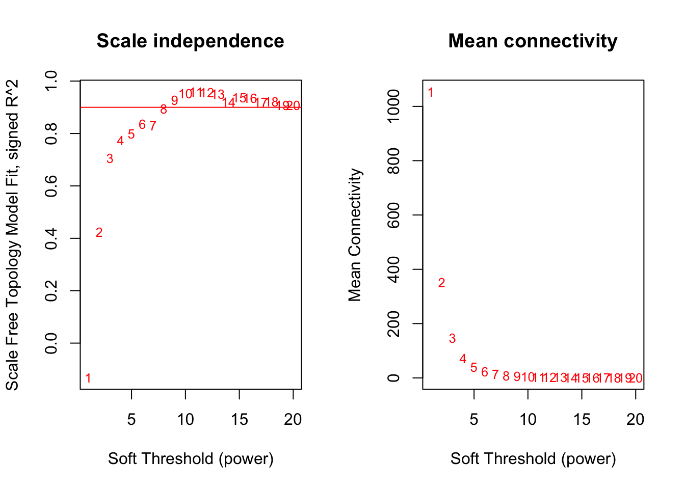
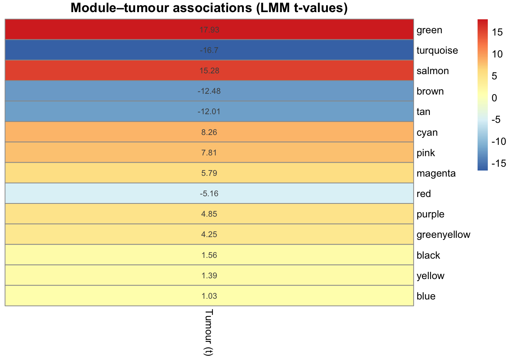
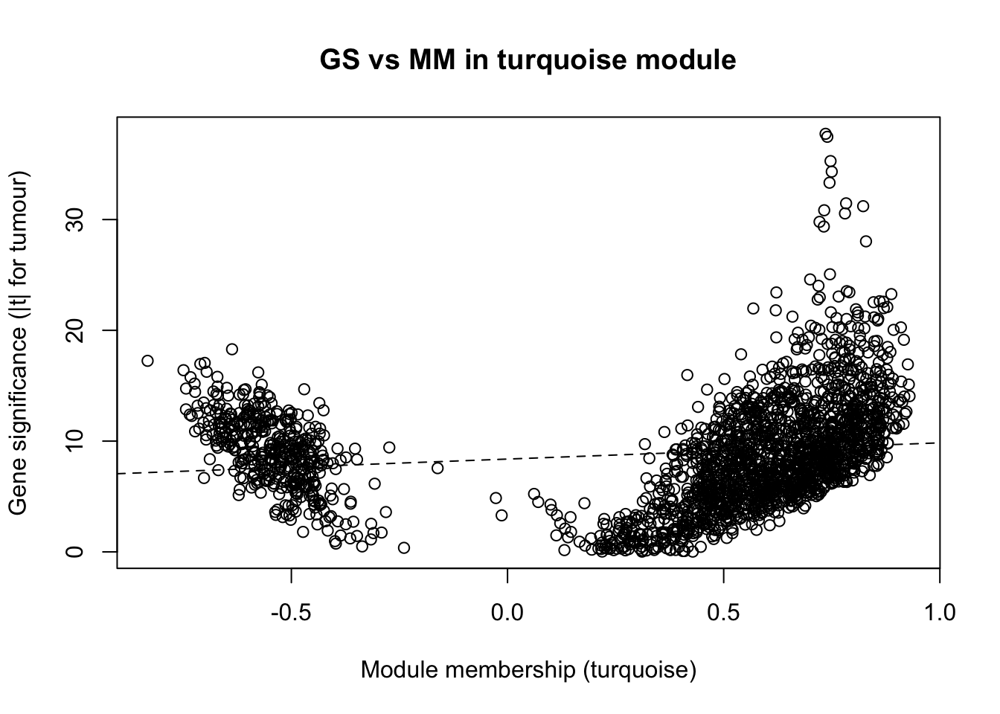
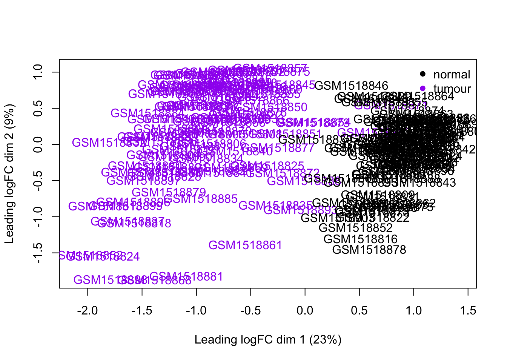
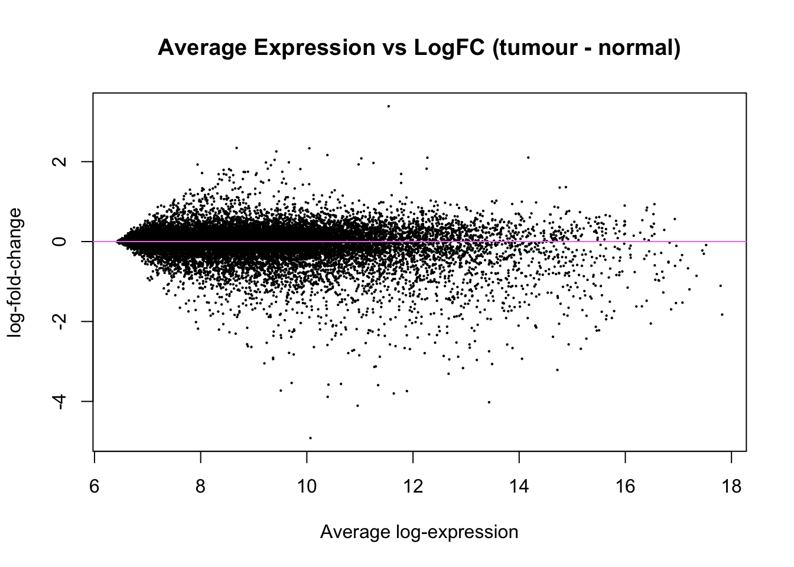
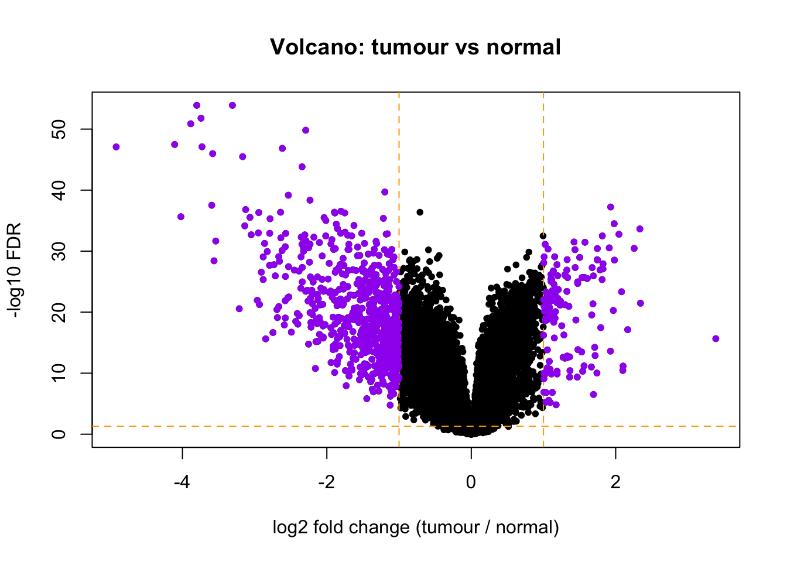
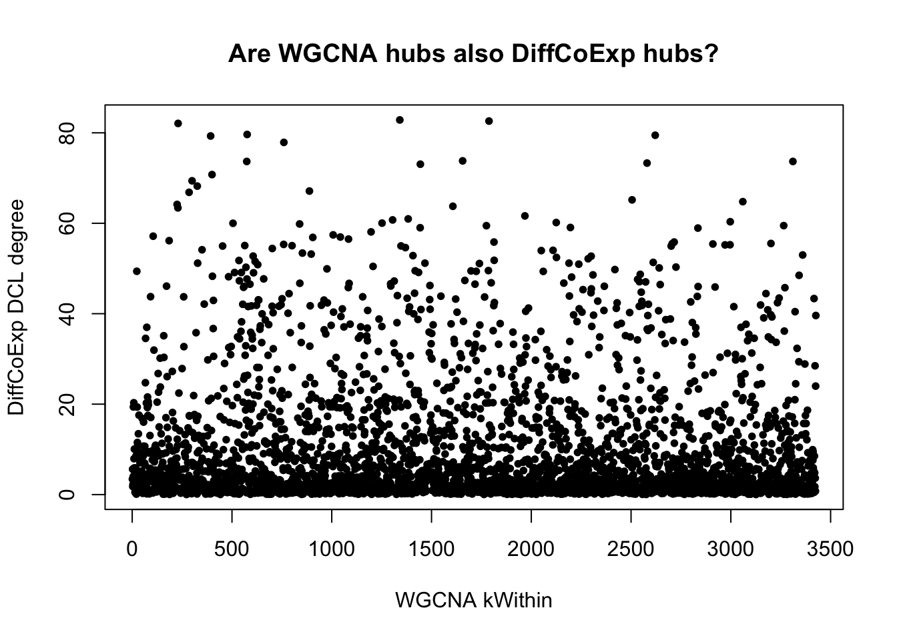

#Load cleaned dataset + safety stuff
library(WGCNA)
library(nlme)
library(dplyr)
options(stringsAsFactors = FALSE)
disableWGCNAThreads() # reproducibility
set.seed(1)
# Point to your saved file
infile <- "GSE62043_clean_noOutliers_20251223.RData"
load(infile)
# Expect: expr_gene (genes x samples), sample_info, datExpr0 (samples x genes) optional,
# and sample_traits already saved.
stopifnot(exists("expr_gene"), exists("sample_info"))
if (!exists("datExpr0")) datExpr0 <- t(expr_gene)
stopifnot(identical(rownames(datExpr0), rownames(sample_info)))
# Build/confirm traits: patient_id, tumour, Age, Gender (no Stage_num)
if (!exists("sample_traits")) {
sample_traits <- sample_info[, intersect(c("patient_id","tumour","Age","Gender"),
colnames(sample_info)), drop = FALSE]
}
# Coerce types safely
sample_traits$patient_id <- factor(sample_traits$patient_id)
sample_traits$tumour <- as.integer(sample_traits$tumour)
if ("Age" %in% names(sample_traits)) sample_traits$Age <- suppressWarnings(as.numeric(sample_traits$Age))
if ("Gender" %in% names(sample_traits)) {
g <- toupper(trimws(as.character(sample_traits$Gender)))
g[!g %in% c("F","M")] <- NA_character_
sample_traits$Gender <- factor(g, levels = c("F","M"))
}
rownames(sample_traits) <- rownames(sample_info)
stopifnot(identical(rownames(datExpr0), rownames(sample_traits)))SD_WGCNA_exactly
# WGCNA: Choosing soft-threshold (unsigned)
gsg <- goodSamplesGenes(datExpr0, verbose = 3); stopifnot(gsg$allOK) Flagging genes and samples with too many missing values...
..step 1nGenesForSFT <- min(5000, ncol(datExpr0))
vars <- apply(datExpr0, 2, var)
topGenesSFT <- names(sort(vars, decreasing = TRUE))[1:nGenesForSFT]
datExpr_sft <- datExpr0[, topGenesSFT, drop = FALSE]
powers <- 1:20
sft <- pickSoftThreshold(datExpr_sft, powerVector = powers,
networkType = "unsigned", verbose = 5)pickSoftThreshold: will use block size 5000.
pickSoftThreshold: calculating connectivity for given powers...
..working on genes 1 through 5000 of 5000
Power SFT.R.sq slope truncated.R.sq mean.k. median.k. max.k.
1 1 0.132 0.682 0.944 1050.000 1.04e+03 1910.0
2 2 0.425 -0.858 0.912 352.000 3.10e+02 976.0
3 3 0.706 -1.270 0.938 148.000 1.11e+02 569.0
4 4 0.775 -1.450 0.944 72.200 4.57e+01 359.0
5 5 0.800 -1.500 0.946 39.100 2.08e+01 240.0
6 6 0.836 -1.490 0.957 22.900 1.01e+01 167.0
7 7 0.831 -1.520 0.938 14.300 5.07e+00 120.0
8 8 0.894 -1.450 0.975 9.340 2.73e+00 88.7
9 9 0.928 -1.390 0.990 6.380 1.54e+00 67.1
10 10 0.952 -1.340 0.996 4.520 9.07e-01 51.7
11 11 0.960 -1.340 0.992 3.300 5.47e-01 41.6
12 12 0.956 -1.350 0.994 2.470 3.27e-01 34.7
13 13 0.952 -1.360 0.993 1.900 2.07e-01 29.5
14 14 0.920 -1.400 0.961 1.490 1.31e-01 25.4
15 15 0.937 -1.390 0.984 1.190 8.40e-02 22.1
16 16 0.935 -1.400 0.989 0.961 5.38e-02 19.4
17 17 0.921 -1.420 0.979 0.790 3.47e-02 17.2
18 18 0.921 -1.420 0.983 0.658 2.32e-02 15.3
19 19 0.909 -1.430 0.978 0.554 1.51e-02 13.7
20 20 0.908 -1.410 0.978 0.471 9.89e-03 12.3par(mfrow = c(1,2))
plot(sft$fitIndices[,1],
-sign(sft$fitIndices[,3]) * sft$fitIndices[,2],
xlab = "Soft Threshold (power)",
ylab = "Scale Free Topology Model Fit, signed R^2",
type = "n", main = "Scale independence")
text(sft$fitIndices[,1],
-sign(sft$fitIndices[,3]) * sft$fitIndices[,2],
labels = powers, cex = 0.8, col = "red")
abline(h = 0.90, col = "red")
plot(sft$fitIndices[,1], sft$fitIndices[,5],
xlab = "Soft Threshold (power)",
ylab = "Mean Connectivity",
type = "n", main = "Mean connectivity")
text(sft$fitIndices[,1], sft$fitIndices[,5], labels = powers, cex = 0.8, col = "red")
fit <- -sign(sft$fitIndices[,3]) * sft$fitIndices[,2]
softPower <- if (any(fit >= 0.90, na.rm = TRUE)) powers[which(fit >= 0.90)[1]] else 7
softPower # 9[1] 9# Network construction (unsigned Pearson)
maxBlockSize <- 12000
net <- blockwiseModules(
datExpr0,
power = softPower,
networkType = "unsigned",
TOMType = "unsigned",
corType = "pearson",
maxBlockSize = maxBlockSize,
minModuleSize = 70,
reassignThreshold = 0,
mergeCutHeight = 0.25,
deepSplit = 2,
pamRespectsDendro = FALSE,
numericLabels = FALSE,
saveTOMs = TRUE,
saveTOMFileBase = sprintf("GSE62043_TOM_unsigned_power%i", softPower),
verbose = 3
) Calculating module eigengenes block-wise from all genes
Flagging genes and samples with too many missing values...
..step 1
....pre-clustering genes to determine blocks..
Projective K-means:
..k-means clustering..
..merging smaller clusters...
Block sizes:
gBlocks
1 2
11988 7607
..Working on block 1 .
TOM calculation: adjacency..
..will not use multithreading.
Fraction of slow calculations: 0.000000
..connectivity..
..matrix multiplication (system BLAS)..
..normalization..
..done.
..saving TOM for block 1 into file GSE62043_TOM_unsigned_power9-block.1.RData
....clustering..
....detecting modules..
....calculating module eigengenes..
....checking kME in modules..
..removing 1 genes from module 1 because their KME is too low.
..removing 9 genes from module 4 because their KME is too low.
..removing 1 genes from module 8 because their KME is too low.
..Working on block 2 .
TOM calculation: adjacency..
..will not use multithreading.
Fraction of slow calculations: 0.000000
..connectivity..
..matrix multiplication (system BLAS)..
..normalization..
..done.
..saving TOM for block 2 into file GSE62043_TOM_unsigned_power9-block.2.RData
....clustering..
....detecting modules..
....calculating module eigengenes..
....checking kME in modules..
..removing 21 genes from module 3 because their KME is too low.
..merging modules that are too close..
mergeCloseModules: Merging modules whose distance is less than 0.25
Calculating new MEs...moduleColors <- net$colors
names(moduleColors) <- colnames(datExpr0)
MEs <- orderMEs(net$MEs)
MEs <- MEs[, !grepl("^MEgrey$", names(MEs)), drop = FALSE]
table(moduleColors)moduleColors
black blue brown cyan green greenyellow
323 1648 1312 95 1029 131
grey magenta pink purple red salmon
9247 172 198 160 493 97
tan turquoise yellow
104 3371 1215 # Li-style LMMs for module eigengenes:
# ME ~ tumour + Age + Gender + (1|patient_id)
# (paired subjects only; drop if missing covars)
ctrl_lme <- nlme::lmeControl(
singular.ok = TRUE, returnObject = TRUE,
opt = "optim", msMaxIter = 200, maxIter = 200, niterEM = 50
)
stopifnot(identical(rownames(MEs), rownames(sample_traits)))
datLMM <- cbind(sample_traits, as.data.frame(MEs))
# covariates are fixed: Age + Gender (drop if all-NA)
covars <- c("Age","Gender")
covars <- covars[!sapply(datLMM[covars], function(v) all(is.na(v)))]
rhs <- paste(c("tumour", covars), collapse = " + ")
modNames <- colnames(MEs)
lmm_results <- lapply(modNames, function(mn) {
# Keep only rows with complete data for this module + covars
cols_needed <- c("patient_id", "tumour", covars, mn)
d <- datLMM[, cols_needed, drop = FALSE]
d <- d[complete.cases(d), , drop = FALSE]
# Now enforce true pairing on the rows that will actually be modeled
tabTN <- with(d, table(patient_id, tumour))
keep_pat <- rownames(tabTN)[rowSums(tabTN > 0) == 2]
d <- d[d$patient_id %in% keep_pat, , drop = FALSE]
# If nothing left, return NAs
if (nrow(d) < 4) {
return(data.frame(module = mn, beta_tumour = NA, t_tumour = NA, p_tumour = NA))
}
form <- as.formula(paste(mn, "~", rhs))
fit <- tryCatch(
nlme::lme(form, random = ~ 1 | patient_id,
data = d, method = "REML", control = ctrl_lme),
error = function(e) NULL
)
if (is.null(fit)) {
return(data.frame(module = mn, beta_tumour = NA, t_tumour = NA, p_tumour = NA))
}
sm <- summary(fit)
coef_name <- if ("tumour" %in% rownames(sm$tTable)) "tumour" else
grep("^tumour", rownames(sm$tTable), value = TRUE)[1]
data.frame(
module = mn,
beta_tumour = sm$tTable[coef_name, "Value"],
t_tumour = sm$tTable[coef_name, "t-value"],
p_tumour = sm$tTable[coef_name, "p-value"],
row.names = NULL
)
})
lmm_results_df <- do.call(rbind, lmm_results)
lmm_results_df$FDR_tumour <- p.adjust(lmm_results_df$p_tumour, method = "BH")
lmm_results_df <- lmm_results_df[order(lmm_results_df$p_tumour), ]
lmm_results_df module beta_tumour t_tumour p_tumour FDR_tumour
13 MEgreen 0.113865010 17.931365 8.849655e-32 1.238952e-30
4 MEturquoise -0.113148008 -16.703370 1.324776e-29 9.273432e-29
14 MEsalmon 0.099423074 15.277010 5.663103e-27 2.642782e-26
6 MEbrown -0.098708731 -12.482956 1.661738e-21 5.816082e-21
7 MEtan -0.082873705 -12.011999 1.510032e-20 4.228091e-20
9 MEcyan 0.061724581 8.259288 1.037621e-12 2.421115e-12
12 MEpink 0.069675009 7.812670 8.815625e-12 1.763125e-11
1 MEmagenta 0.017756193 5.788195 9.769685e-08 1.709695e-07
5 MEred -0.041631923 -5.155986 1.438200e-06 2.237201e-06
8 MEpurple 0.042942543 4.850331 4.999605e-06 6.999447e-06
10 MEgreenyellow 0.038229392 4.245908 5.196763e-05 6.614061e-05
2 MEblack 0.005441032 1.556064 1.231263e-01 1.436473e-01
11 MEyellow 0.013311006 1.392200 1.672179e-01 1.800808e-01
3 MEblue 0.003920094 1.030574 3.054423e-01 3.054423e-01# Heatmap
if (requireNamespace("pheatmap", quietly = TRUE)) {
lmm_results_df$module_clean <- substring(lmm_results_df$module, 3)
tmat <- matrix(lmm_results_df$t_tumour,
nrow = nrow(lmm_results_df),
dimnames = list(lmm_results_df$module_clean, "Tumour (t)"))
pheatmap::pheatmap(tmat, main = "Module–tumour associations (LMM t-values)",
cluster_rows = FALSE, cluster_cols = FALSE,
display_numbers = round(tmat, 2))
}
# MM (module membership) + GS (per-gene LMM |t| for tumour)
datExpr <- datExpr0 # samples x genes
# MM
modNames_clean <- substring(colnames(MEs), 3)
geneModuleMembership <- as.data.frame(WGCNA::cor(datExpr, MEs, use = "p"))
colnames(geneModuleMembership) <- paste0("MM", modNames_clean)
geneModuleMembership$gene <- colnames(datExpr)
# Traits aligned to datExpr
traits_full <- sample_traits[rownames(datExpr), , drop = FALSE]
need_vars <- intersect(c("patient_id","tumour", covars), names(traits_full))
keep1 <- complete.cases(traits_full[, need_vars, drop = FALSE])
datExpr_ok <- datExpr[keep1, , drop = FALSE]
traits_ok <- traits_full[keep1, , drop = FALSE]
# Keep only subjects with both tumour states (0 and 1)
tab <- with(traits_ok, table(patient_id, tumour))
keep_patients2 <- rownames(tab)[rowSums(tab > 0, na.rm = TRUE) == 2]
keep_rows2 <- traits_ok$patient_id %in% keep_patients2
datExpr_ok <- datExpr_ok[keep_rows2, , drop = FALSE]
traits_ok <- traits_ok [keep_rows2, , drop = FALSE]
stopifnot(identical(rownames(datExpr_ok), rownames(traits_ok)))
# pick genes for GS
nGS <- min(8000, ncol(datExpr_ok))
vars_ok <- apply(datExpr_ok, 2, var, na.rm = TRUE)
genes_for_GS <- names(sort(vars_ok, decreasing = TRUE))[1:nGS]
# safe column names
X <- datExpr_ok[, genes_for_GS, drop = FALSE]
safe_names <- make.names(colnames(X), unique = TRUE)
gene_to_safe <- setNames(safe_names, colnames(X))
colnames(X) <- safe_names
datGS <- data.frame(traits_ok, X, check.names = FALSE)
gs_rhs <- paste(c("tumour", covars), collapse = " + ") # same as ME models
gs_list <- lapply(genes_for_GS, function(g) {
g_safe <- gene_to_safe[[g]]
form <- as.formula(paste0(g_safe, " ~ ", gs_rhs))
fit <- tryCatch(
nlme::lme(form, random = ~ 1 | patient_id,
data = datGS, na.action = na.omit,
method = "REML", control = ctrl_lme),
error = function(e) NULL
)
if (is.null(fit)) return(data.frame(gene = g, GS = NA_real_))
sm <- summary(fit)
coef_name <- if ("tumour" %in% rownames(sm$tTable)) "tumour" else
grep("^tumour", rownames(sm$tTable), value = TRUE)[1]
data.frame(gene = g, GS = abs(sm$tTable[coef_name, "t-value"]))
})
geneGS <- do.call(rbind, gs_list)
# Combine hub metrics
hubData <- geneModuleMembership %>%
left_join(geneGS, by = "gene") %>%
mutate(module = moduleColors[match(gene, names(moduleColors))])# kWithin (chunked within-module adjacency; memory-safe, faster)
# Make sure datExpr exists and is aligned
datExpr <- datExpr0
datExpr <- as.matrix(datExpr)
storage.mode(datExpr) <- "double"
stopifnot(identical(colnames(datExpr), names(moduleColors)))
compute_kWithin_chunked <- function(datExpr, moduleColors, softPower,
chunk_size = 500,
exclude_modules = "grey",
cor_use = "p") {
genes <- colnames(datExpr)
moduleColors <- moduleColors[genes] # align defensively
mods <- unique(moduleColors)
mods <- setdiff(mods, exclude_modules)
kWithin <- setNames(rep(NA_real_, length(genes)), genes)
for (mod in mods) {
genes_in_mod <- genes[moduleColors == mod]
m0 <- length(genes_in_mod)
if (m0 < 5) next
X_all <- datExpr[, genes_in_mod, drop = FALSE]
# Drop zero-variance genes (they cause NA correlations)
v <- apply(X_all, 2, var, na.rm = TRUE)
keep <- is.finite(v) & v > 0
if (!all(keep)) {
genes_in_mod <- genes_in_mod[keep]
X_all <- X_all[, keep, drop = FALSE]
}
m <- ncol(X_all)
if (m < 5) next
idx_in_mod <- seq_len(m); names(idx_in_mod) <- colnames(X_all)
kW <- setNames(rep(NA_real_, m), colnames(X_all))
for (s in seq(1, m, by = chunk_size)) {
e <- min(m, s + chunk_size - 1)
X_chunk <- X_all[, s:e, drop = FALSE]
chunk_genes <- colnames(X_chunk)
C <- WGCNA::cor(X_chunk, X_all, use = cor_use)
A <- abs(C)^softPower
# Zero out self-adjacency for the chunk rows (vectorized)
diag_idx <- cbind(seq_len(nrow(A)), idx_in_mod[chunk_genes])
A[diag_idx] <- 0
kW[chunk_genes] <- rowSums(A, na.rm = TRUE)
}
kWithin[names(kW)] <- kW
cat(sprintf("Done kWithin for module %s (%d genes)\n", mod, length(kW)))
}
kWithin
}
# Compute + attach
kWithin_vec <- compute_kWithin_chunked(datExpr, moduleColors, softPower, chunk_size = 500)Done kWithin for module yellow (1215 genes)
Done kWithin for module green (1029 genes)
Done kWithin for module turquoise (3371 genes)
Done kWithin for module blue (1648 genes)
Done kWithin for module brown (1312 genes)
Done kWithin for module salmon (97 genes)
Done kWithin for module pink (198 genes)
Done kWithin for module red (493 genes)
Done kWithin for module purple (160 genes)
Done kWithin for module cyan (95 genes)
Done kWithin for module greenyellow (131 genes)
Done kWithin for module tan (104 genes)
Done kWithin for module black (323 genes)
Done kWithin for module magenta (172 genes)hubData$kWithin <- unname(kWithin_vec[hubData$gene])
# Top hubs per module (same as before, but now faster upstream)
hubList <- hubData %>%
dplyr::filter(!is.na(kWithin)) %>%
dplyr::group_by(module) %>%
dplyr::arrange(dplyr::desc(kWithin), .by_group = TRUE) %>%
dplyr::slice_head(n = 10) %>%
dplyr::ungroup()
hubList# A tibble: 140 × 18
MMmagenta MMblack MMblue MMturquoise MMred MMbrown MMtan MMpurple MMcyan
<dbl> <dbl> <dbl> <dbl> <dbl> <dbl> <dbl> <dbl> <dbl>
1 0.425 0.920 0.558 -0.183 -0.0180 -0.0447 0.324 0.131 0.0664
2 0.421 0.890 0.661 -0.0118 0.194 0.200 0.511 0.116 -0.0597
3 0.377 0.876 0.674 -0.116 0.0737 -0.0396 0.387 0.104 0.0886
4 0.542 0.910 0.599 0.0198 0.201 0.151 0.491 -0.0204 -0.0572
5 0.424 0.888 0.622 -0.0550 0.139 0.249 0.488 0.190 -0.0269
6 0.543 0.885 0.490 0.0802 0.0507 0.186 0.503 -0.0349 -0.0346
7 0.401 0.889 0.612 -0.124 0.158 0.0199 0.351 0.130 -0.0185
8 0.381 0.897 0.523 -0.0747 0.0777 0.0346 0.357 0.0289 0.0530
9 0.412 0.874 0.548 -0.195 -0.0720 -0.0661 0.287 0.152 0.0818
10 0.356 0.861 0.621 -0.107 0.0112 -0.0356 0.366 0.0891 0.0233
# ℹ 130 more rows
# ℹ 9 more variables: MMgreenyellow <dbl>, MMyellow <dbl>, MMpink <dbl>,
# MMgreen <dbl>, MMsalmon <dbl>, gene <chr>, GS <dbl>, module <chr>,
# kWithin <dbl>#Table: Top 5 genes by kWithin in green/turquoise/salmon
target_modules <- c("green", "turquoise", "salmon")
pool_n <- 80 # take more than 5 so we can skip any NA/failed GS fits safely
# --- Helper: compute GS for a given gene set (paired subset, same covars, same LMM spec) ---
compute_GS_for_genes <- function(genes, datExpr_ok, traits_ok, covars, ctrl_lme) {
genes <- intersect(genes, colnames(datExpr_ok))
if (length(genes) == 0) return(data.frame(gene = character(), GS = numeric()))
X <- datExpr_ok[, genes, drop = FALSE]
safe <- make.names(colnames(X), unique = TRUE)
map <- setNames(safe, colnames(X))
colnames(X) <- safe
datGS_small <- data.frame(traits_ok, X, check.names = FALSE)
rhs <- paste(c("tumour", covars), collapse = " + ")
out <- lapply(genes, function(g) {
g_safe <- map[[g]]
form <- as.formula(paste0(g_safe, " ~ ", rhs))
fit <- tryCatch(
nlme::lme(form, random = ~ 1 | patient_id,
data = datGS_small, na.action = na.omit,
method = "REML", control = ctrl_lme),
error = function(e) NULL
)
if (is.null(fit)) return(data.frame(gene = g, GS = NA_real_))
sm <- summary(fit)
rn <- rownames(sm$tTable)
coef_name <- if ("tumour" %in% rn) "tumour" else grep("^tumour", rn, value = TRUE)[1]
if (is.na(coef_name)) return(data.frame(gene = g, GS = NA_real_))
data.frame(gene = g, GS = abs(sm$tTable[coef_name, "t-value"]))
})
dplyr::bind_rows(out)
}
# --- Build a candidate pool: top kWithin genes per module ---
pool <- hubData %>%
dplyr::filter(module %in% target_modules, !is.na(kWithin)) %>%
dplyr::group_by(module) %>%
dplyr::arrange(dplyr::desc(kWithin), .by_group = TRUE) %>%
dplyr::slice_head(n = pool_n) %>%
dplyr::ungroup() %>%
dplyr::select(gene, module, kWithin, GS)
# --- Add module membership (MM for that gene's own module) ---
mm_df <- geneModuleMembership
rownames(mm_df) <- mm_df$gene
pool$MM <- mapply(function(g, mod) {
col <- paste0("MM", mod)
if (!col %in% colnames(mm_df)) return(NA_real_)
i <- match(g, mm_df$gene)
if (is.na(i)) return(NA_real_)
as.numeric(mm_df[i, col, drop = TRUE])
}, pool$gene, pool$module)
# --- Ensure GS exists for all genes in pool (compute missing ones only) ---
missing_gs <- pool$gene[is.na(pool$GS)]
missing_gs <- unique(missing_gs)
if (length(missing_gs) > 0) {
gs_new <- compute_GS_for_genes(missing_gs, datExpr_ok, traits_ok, covars, ctrl_lme)
pool <- dplyr::left_join(pool, gs_new, by = "gene", suffix = c("", ".new"))
pool$GS <- ifelse(is.na(pool$GS), pool$GS.new, pool$GS)
pool$GS.new <- NULL
}
# --- Final: keep complete rows, take top 5 per module, order by kWithin ---
top15 <- pool %>%
dplyr::filter(is.finite(kWithin), is.finite(MM), is.finite(GS)) %>%
dplyr::group_by(module) %>%
dplyr::arrange(dplyr::desc(kWithin), .by_group = TRUE) %>%
dplyr::slice_head(n = 5) %>%
dplyr::ungroup() %>%
dplyr::arrange(dplyr::desc(kWithin)) %>%
dplyr::select(gene, module, kWithin, MM, GS)
# If you ended up with < 15 rows, increase pool_n (or allow more genes per module)
if (nrow(top15) < 15) {
warning("Got only ", nrow(top15), " rows without NA. Try increasing pool_n (e.g., 150).")
}
# Render as a table
knitr::kable(top15, digits = 3,
col.names = c("Gene", "Module", "kWithin", "Module membership (MM)", "Gene significance (GS)"),
caption = "Top 5 genes (by kWithin) in green, turquoise, salmon modules (no NA; ordered by kWithin).")| Gene | Module | kWithin | Module membership (MM) | Gene significance (GS) |
|---|---|---|---|---|
| GMFG | turquoise | 82.849 | 0.930 | 14.057 |
| LCP2 | turquoise | 82.602 | 0.904 | 13.561 |
| ARHGDIB | turquoise | 82.082 | 0.916 | 11.556 |
| CD53 | turquoise | 79.640 | 0.865 | 9.196 |
| RCSD1 | turquoise | 79.465 | 0.906 | 11.444 |
| SPC25 | green | 55.214 | 0.948 | 16.699 |
| BUB1 | green | 54.136 | 0.948 | 14.231 |
| MELK | green | 53.957 | 0.941 | 15.936 |
| CDCA5 | green | 52.737 | 0.943 | 17.437 |
| NUF2 | green | 52.158 | 0.932 | 15.543 |
| SCAMP3 | salmon | 7.472 | 0.936 | 16.279 |
| SNX27 | salmon | 5.832 | 0.920 | 14.665 |
| SCNM1 | salmon | 5.430 | 0.910 | 13.348 |
| PRCC | salmon | 4.748 | 0.897 | 11.012 |
| VPS72 | salmon | 4.570 | 0.895 | 15.120 |
raw_top5 <- hubData %>%
dplyr::filter(module %in% target_modules, !is.na(kWithin)) %>%
dplyr::group_by(module) %>%
dplyr::arrange(dplyr::desc(kWithin), .by_group = TRUE) %>%
dplyr::slice_head(n = 5) %>%
dplyr::ungroup() %>%
dplyr::select(gene, module, kWithin)
final_top5 <- top15 %>%
dplyr::group_by(module) %>%
dplyr::slice_head(n = 5) %>%
dplyr::ungroup() %>%
dplyr::select(gene, module, kWithin)
dplyr::anti_join(raw_top5, final_top5, by = c("gene","module")) # returns 0 rows# A tibble: 0 × 3
# ℹ 3 variables: gene <chr>, module <chr>, kWithin <dbl>#Example GS vs MM plot (largest module that's not grey)
tab <- sort(table(moduleColors), decreasing = TRUE)
targetModule <- names(tab)[names(tab) != "grey"][1]
mm_col <- paste0("MM", targetModule)
inMod <- hubData$module == targetModule
if (!mm_col %in% names(hubData)) stop("Missing column ", mm_col, " (did you remove MEgrey but picked grey?)")
df <- hubData[inMod, c("GS", mm_col), drop = FALSE]
df <- df[complete.cases(df), , drop = FALSE] # drop NA GS/MM rows
if (nrow(df) < 2) stop("No non-NA points to plot for module ", targetModule)
names(df) <- c("GS","MM")
plot(df$MM, df$GS,
xlab = paste0("Module membership (", targetModule, ")"),
ylab = "Gene significance (|t| for tumour)",
main = paste("GS vs MM in", targetModule, "module"))
abline(lm(GS ~ MM, data = df), lty = 2)
#Exports
stamp <- format(Sys.Date(), "%Y%m%d")
write.csv(lmm_results_df, file = sprintf("WGCNA_ME_LMM_AgeGender_%s.csv", stamp), row.names = FALSE)
write.csv(hubList, file = sprintf("WGCNA_top10_hubs_%s.csv", stamp), row.names = FALSE)
moduleGenes <- split(hubData$gene, hubData$module)
for (mod in names(moduleGenes)) {
write.table(moduleGenes[[mod]], file = paste0("module_", mod, "_genes.txt"),
row.names = FALSE, col.names = FALSE, quote = FALSE)
}
# Save analysis state (optional)
save(net, moduleColors, MEs, softPower,
lmm_results_df, geneModuleMembership, geneGS, hubData, hubList,
file = sprintf("WGCNA_outputs_AgeGender_%s.RData", stamp), compress = "xz")# ---- Save paired WGCNA outputs for reuse (2nd dataset) ----
# Make sure gene IDs are attached everywhere
moduleColors_paired <- moduleColors
names(moduleColors_paired) <- colnames(datExpr0)
MEs_paired <- MEs
# (MEs already have rownames = samples; keep them)
stopifnot(identical(rownames(MEs_paired), rownames(sample_traits)))
hubData_paired <- hubData
# Give hubData stable rownames for easy joins later
if ("gene" %in% names(hubData_paired)) rownames(hubData_paired) <- hubData_paired$gene
lmm_results_paired <- lmm_results_df
# TOM note:
# In this pipeline you used blockwiseModules(..., saveTOMs = FALSE),
# and computed kWithin chunk-wise (no full TOM/adjacency stored).
# So we export TOM as NULL (but keep TOM file info if it exists).
TOM_paired <- NULL
TOM_files <- NULL
if (exists("net") && is.list(net)) {
if (!is.null(net$TOMFiles)) TOM_files <- net$TOMFiles
if (!is.null(net$TOMFile)) TOM_files <- net$TOMFile
}
paired_wgcna_export <- list(
method = "paired_WGCNA_blockwise_unsigned_AgeGender",
dataset = "GSE62043",
date = Sys.Date(),
# Network settings
softPower = softPower,
networkType = "unsigned",
corType = "pearson",
TOMType = "unsigned",
params = list(
minModuleSize = 70,
mergeCutHeight = 0.25,
deepSplit = 2,
maxBlockSize = if (exists("maxBlockSize")) maxBlockSize else NA_integer_
),
# Covariates used in LMMs
covariates = covars,
# IDs
samples = rownames(datExpr0),
genes = colnames(datExpr0),
# Core WGCNA outputs
moduleColors = moduleColors_paired,
TOM = TOM_paired,
TOM_files = TOM_files,
MEs = MEs_paired,
# Downstream association + hub summaries
lmm_results = lmm_results_paired,
hubData = hubData_paired,
hubList = hubList,
# Helpful extras for re-use / comparison
geneModuleMembership = geneModuleMembership,
geneGS = geneGS,
sample_traits = sample_traits
)
paired_wgcna_export$TOM_files <- TOM_files
paired_wgcna_export$TOM <- NULL # keep NULL (TOM itself is huge)
stamp <- format(Sys.Date(), "%Y%m%d")
saveRDS(paired_wgcna_export,
file = sprintf("paired_wgcna_export_GSE62043_%s.rds", stamp))NEW METHOD 1: LIMMA ————————————————————
library(limma)
#set up factors
limma_data <- datLMM
#datExpr_ok are complete cases
limma_expr <- t(datExpr_ok)
limma_data$tumour <- factor(limma_data$tumour,
levels = c(0,1),
labels = c("normal", "tumour"))
limma_data$patient_id <- factor(limma_data$patient_id)
#same design as we are using for the first dataset
design <- model.matrix(~ patient_id + tumour, data = limma_data)
#colnames(design)
#run Limma
fit_limma2 <- lmFit(limma_expr, design)
fit_limma2 <- eBayes(fit_limma2)
summary(fit_limma2) Length Class Mode
coefficients 1841930 -none- numeric
rank 1 -none- numeric
assign 94 -none- numeric
qr 5 qr list
df.residual 19595 -none- numeric
sigma 19595 -none- numeric
cov.coefficients 8836 -none- numeric
stdev.unscaled 1841930 -none- numeric
pivot 94 -none- numeric
Amean 19595 -none- numeric
method 1 -none- character
design 17484 -none- numeric
df.prior 1 -none- numeric
s2.prior 1 -none- numeric
var.prior 94 -none- numeric
proportion 1 -none- numeric
s2.post 19595 -none- numeric
t 1841930 -none- numeric
df.total 19595 -none- numeric
p.value 1841930 -none- numeric
lods 1841930 -none- numeric
F 19595 -none- numeric
F.p.value 19595 -none- numeric tt_limma2 <- topTable(fit_limma2, coef = "tumourtumour",number = Inf)
#tt_limma2
#statistically significant miRNAs
#Method 1: choose the k most significant genes
ord_sig_limma2 <- tt_limma2[order(tt_limma2$adj.P.Val),]
#gives the 10 most significant miRNAs
ord_sig_limma2[1:10,] logFC AveExpr t P.Value adj.P.Val B
CLEC4G -3.801440 11.637685 -38.09557 6.640119e-59 1.255166e-54 123.3116
MARCO -3.307660 12.670715 -37.81282 1.281109e-58 1.255166e-54 122.6776
FCN3 -3.742258 11.885255 -35.61374 2.473461e-56 1.615582e-52 117.5870
CRHBP -3.885106 10.392471 -34.65449 2.684458e-55 1.315049e-51 115.2732
STAB2 -2.292635 10.547746 -33.60708 3.872573e-54 1.517661e-50 112.6780
CXCL14 -4.107626 10.957329 -31.51184 1.003349e-51 3.276771e-48 107.2582
CLEC1B -3.729041 9.510247 -31.13740 2.797636e-51 7.831381e-48 106.2559
OIT3 -4.917527 10.068017 -31.07033 3.365367e-51 8.243046e-48 106.0752
CFP -2.616591 11.671267 -30.82960 6.549277e-51 1.425923e-47 105.4239
FCN2 -3.581026 10.407283 -30.08109 5.337062e-50 1.045797e-46 103.3701Plotting Limma
cols <- ifelse(limma_data$tumour == "tumour", "purple", "black")
#MDS plot
plotMDS(limma_expr,
top = 500,
labels = limma_data$patient_id,
col = cols)
legend("topright",
legend = c("normal", "tumour"),
col = c("black", "purple"),
pch = 16, bty = "n")
#MA plot for tumour effect (tumour - normal)
limma::plotMA(fit_limma2,
coef = "tumourtumour",
main = "Average Expression vs LogFC (tumour - normal)")
abline(h = 0, col = "violet")
library(pheatmap)
topN <- 30
top_ids <- rownames(tt_limma2)[order(tt_limma2$adj.P.Val)][1:topN]
top_ids [1] "CLEC4G" "MARCO" "FCN3" "CRHBP" "STAB2" "CXCL14"
[7] "CLEC1B" "OIT3" "CFP" "FCN2" "DNASE1L3" "ECM1"
[13] "ADAMTS13" "CLEC4M" "CETP" "IGFALS" "PTTG1" "CXCL12"
[19] "PTH1R" "LEPREL1" "EFNB3" "C7" "PLAC8" "GDF2"
[25] "LIFR" "DCN" "HAMP" "ANGPTL6" "LILRB5" "CYP26A1" mat <- t(datExpr0[, top_ids, drop = FALSE]) # genes x samples
ann_col <- data.frame(
condition = limma_data$tumour,
patient_id = limma_data$patient_id
)
limma_data$tumour [1] tumour tumour tumour tumour tumour tumour tumour tumour tumour tumour
[11] tumour tumour tumour tumour tumour tumour tumour tumour tumour tumour
[21] tumour tumour tumour tumour tumour tumour tumour tumour tumour tumour
[31] tumour tumour tumour tumour tumour tumour tumour tumour tumour tumour
[41] tumour tumour tumour tumour tumour tumour tumour tumour tumour tumour
[51] tumour tumour tumour tumour tumour tumour tumour tumour tumour tumour
[61] tumour tumour tumour tumour tumour tumour tumour tumour tumour tumour
[71] tumour tumour tumour tumour tumour tumour tumour tumour tumour tumour
[81] tumour tumour tumour tumour tumour tumour tumour tumour tumour tumour
[91] tumour tumour tumour normal normal normal normal normal normal normal
[101] normal normal normal normal normal normal normal normal normal normal
[111] normal normal normal normal normal normal normal normal normal normal
[121] normal normal normal normal normal normal normal normal normal normal
[131] normal normal normal normal normal normal normal normal normal normal
[141] normal normal normal normal normal normal normal normal normal normal
[151] normal normal normal normal normal normal normal normal normal normal
[161] normal normal normal normal normal normal normal normal normal normal
[171] normal normal normal normal normal normal normal normal normal normal
[181] normal normal normal normal normal normal
Levels: normal tumourrownames(ann_col) <- rownames(limma_data)
#align annotation rows to the SAMPLE columns of mat
ann_col <- ann_col[colnames(mat), , drop = FALSE]
pheatmap(mat,
scale = "row",
annotation_col = ann_col,
show_colnames = FALSE,
main = paste("Top", length(top_ids), "DE genes (limma)"))
#Volcano Plot
tt_volc2 <- topTable(fit_limma2, coef = "tumourtumour",number = Inf)
tt_volc2$negLog10FDR <- -log10(tt_volc2$adj.P.Val)
#these parameters were chosen
p_sig <- 0.05
co_FC <- 1
sig <- tt_volc2$adj.P.Val < p_sig & abs(tt_volc2$logFC) > co_FC
plot(tt_volc2$logFC, tt_volc2$negLog10FDR,
pch=20,
xlab="log2 fold change (tumour / normal)",
ylab="-log10 FDR",
main="Volcano: tumour vs normal")
abline(v=c(-1, 1), col="orange", lty=2)
abline(h=-log10(0.05), col="orange", lty=2)
points(tt_volc2$logFC[sig], tt_volc2$negLog10FDR[sig],
pch = 20, col = "purple")
Get parameters for paper
tot_dim <- dim(tt_limma2)[1]
tot_dim[1] 19595dim_sig <- dim(tt_limma2[tt_limma2$adj.P.Val < 0.05,])[1]
tt_rel2 <- (tt_limma2[tt_limma2$adj.P.Val < 0.05 & abs(tt_limma2$logFC) >= 1,])
dim_rel <- dim(tt_rel2)[1]
dim_down <- dim(tt_rel2[tt_rel2$logFC<0,])[1]
dim_up <- dim(tt_rel2[tt_rel2$logFC>0,])[1]
frac <- dim_rel/tot_dim
cat("fraction significant:", frac, "\n")fraction significant: 0.04031641 cat("both conditions:", dim_rel, "\n")both conditions: 790 cat("down:", dim_down, "\n")down: 656 cat("up:", dim_up, "\n")up: 134 dim_down/dim_rel[1] 0.8303797dim_up/dim_rel[1] 0.1696203#head(tt_rel2)COMPARING LIMMA AND PAIRED WGCNA (lw) ——————————————
Do the miRNAs deemed important by paired WGCNA and Limma overlap?
#we are filtering out genes from the grey module, since those do not have a kWithin score
#We can do this since the genes in the grey module are just the ones "left over"
hubData2 <- hubData[hubData$module!= "grey",]
#add new column to make extracting easier
hubData2$MM_self <- as.numeric(hubData2[cbind(seq_len(nrow(hubData2)), match(paste0("MM", hubData2$module), names(hubData2)))])
N_comp_lw <- c(200,150,100,50)
for(i in 1:length(N_comp_lw)){
limma2_top <- rownames(ord_sig_limma2)[1:N_comp_lw[i]]
#WGCNA "importance" score = GS_i * |MM_i|
#GS = gene significance: how "phenotype associated" a miRNA is
#MM = module membership: how much a miRNA "belongs" to a module
mm_col <- paste0("MM", hubData2$module)
#hubData$MM_self <- mapply(function(i, col) hubData[i, col], seq_len(nrow(hubData2)), mm_col)
#hubData2$MM_self
hubData2$wgcna_score <- hubData2$GS * abs(hubData2$MM_self)
wgcna_top <- hubData2$gene[order(-hubData2$wgcna_score)][1:N_comp_lw[i]]
cat("N =", N_comp_lw[i],"\n")
cat("Numer of overlapping miRNAs:",length(intersect(limma2_top, wgcna_top)))
#head(intersect(limma_top, wgcna_top), 20)
universe <- intersect(rownames(ord_sig_limma2), hubData2$gene)
A <- length(intersect(limma2_top, wgcna_top))
B <- length(setdiff(wgcna_top, limma2_top))
C <- length(setdiff(limma2_top, wgcna_top))
D <- length(setdiff(universe, union(limma2_top, wgcna_top)))
fish_comp_lw <- fisher.test(matrix(c(A,B,C,D), nrow=2), alternative="greater")
print(fish_comp_lw)
}N = 200
Numer of overlapping miRNAs: 154
Fisher's Exact Test for Count Data
data: matrix(c(A, B, C, D), nrow = 2)
p-value < 2.2e-16
alternative hypothesis: true odds ratio is greater than 1
95 percent confidence interval:
505.0739 Inf
sample estimates:
odds ratio
714.8289
N = 150
Numer of overlapping miRNAs: 115
Fisher's Exact Test for Count Data
data: matrix(c(A, B, C, D), nrow = 2)
p-value < 2.2e-16
alternative hypothesis: true odds ratio is greater than 1
95 percent confidence interval:
599.5175 Inf
sample estimates:
odds ratio
931.1746
N = 100
Numer of overlapping miRNAs: 76
Fisher's Exact Test for Count Data
data: matrix(c(A, B, C, D), nrow = 2)
p-value < 2.2e-16
alternative hypothesis: true odds ratio is greater than 1
95 percent confidence interval:
758.6419 Inf
sample estimates:
odds ratio
1277.573
N = 50
Numer of overlapping miRNAs: 36
Fisher's Exact Test for Count Data
data: matrix(c(A, B, C, D), nrow = 2)
p-value < 2.2e-16
alternative hypothesis: true odds ratio is greater than 1
95 percent confidence interval:
873.3253 Inf
sample estimates:
odds ratio
1760.158 Limma camera: gene-set test for each module
common_samp <- intersect(rownames(limma_data), rownames(datExpr_ok))
design_cam <- model.matrix(~ patient_id + tumour, data = limma_data[common_samp, , drop = FALSE])
expr_cam <- t(datExpr_ok[common_samp, , drop = FALSE])
#module sets
moduleColors_cam_limma <- setNames(hubData2$module, hubData2$gene)
moduleColors_cam_limma <- moduleColors_cam_limma[names(moduleColors_cam_limma) %in% rownames(expr_cam)]
moduleSets <- split(names(moduleColors_cam_limma), moduleColors_cam_limma)
contrast_idx <- match("tumourtumour", colnames(design_cam))
camera_res <- camera(expr_cam,
index = moduleSets,
design = design_cam,
contrast = contrast_idx)
camera_res[order(camera_res$PValue), ] NGenes Direction PValue FDR
salmon 97 Up 6.750165e-31 9.450231e-30
green 1029 Up 1.804768e-22 1.263338e-21
tan 104 Down 6.393499e-20 2.983633e-19
brown 1312 Down 1.129718e-16 3.954013e-16
cyan 95 Up 1.809098e-12 5.065474e-12
turquoise 3371 Down 8.891444e-12 2.074670e-11
pink 198 Up 2.652478e-11 5.304956e-11
red 493 Down 1.969135e-08 3.445986e-08
greenyellow 131 Up 1.954594e-05 3.040479e-05
purple 160 Up 4.166509e-05 5.833113e-05
magenta 172 Up 2.824633e-03 3.594988e-03
yellow 1215 Up 1.359593e-01 1.586192e-01
black 323 Up 2.450343e-01 2.638831e-01
blue 1648 Up 2.864469e-01 2.864469e-01Which modules contain the most miRNAs flagged by Limma? How likely is this result?
library(dplyr)
#map limma results onto gene names
limma_map <- data.frame(
gene = rownames(ord_sig_limma2),
limma_FDR = ord_sig_limma2$adj.P.Val,
limma_P = ord_sig_limma2$P.Value,
limma_t = ord_sig_limma2$t,
limma_logFC = ord_sig_limma2$logFC,
row.names = NULL
)
#universe: genes present in both limma + WGCNA (hubData2 already non-grey)
universe <- intersect(limma_map$gene, hubData2$gene)
#join and keep only universe genes
comp <- hubData2 %>%
left_join(limma_map, by = "gene") %>%
filter(gene %in% universe) %>%
mutate(limma_sig = -log10(limma_FDR))
#DE set from limma (FDR < 0.05 and |logFC| > 1)
DE <- limma_map$gene[limma_map$limma_FDR < 0.05 & abs(limma_map$limma_logFC) >=1]
DE <- intersect(DE, universe)
length(DE)[1] 774cat("DE genes (FDR<0.05):", length(DE), "\n")DE genes (FDR<0.05): 774 #enrichment per module (hypergeometric)
moduleMembers <- split(comp$gene, comp$module)
mod_enrich <- bind_rows(lapply(names(moduleMembers), function(m) {
genes <- intersect(moduleMembers[[m]], universe)
k <- length(intersect(genes, DE)) # DE inside module
M <- length(genes) # module size
U <- length(universe) # total tested
n <- length(DE) # total DE in universe
p <- phyper(k - 1, M, U - M, n, lower.tail = FALSE)
data.frame(module = m, module_size = M, DE_in_module = k,
frac_DE = k / M, p_value = p)
})) %>%
mutate(FDR = p.adjust(p_value, "BH")) %>%
arrange(FDR, desc(frac_DE))
mod_enrich module module_size DE_in_module frac_DE p_value FDR
1 brown 1312 258 0.196646341 2.368804e-55 3.316326e-54
2 turquoise 3371 390 0.115692673 1.091235e-26 7.638648e-26
3 green 1029 98 0.095238095 6.316979e-03 2.947923e-02
4 cyan 95 14 0.147368421 1.071724e-02 3.751033e-02
5 tan 104 5 0.048076923 8.973396e-01 1.000000e+00
6 salmon 97 4 0.041237113 9.386437e-01 1.000000e+00
7 purple 160 4 0.025000000 9.983135e-01 1.000000e+00
8 pink 198 1 0.005050505 9.999998e-01 1.000000e+00
9 black 323 0 0.000000000 1.000000e+00 1.000000e+00
10 blue 1648 0 0.000000000 1.000000e+00 1.000000e+00
11 greenyellow 131 0 0.000000000 1.000000e+00 1.000000e+00
12 magenta 172 0 0.000000000 1.000000e+00 1.000000e+00
13 red 493 0 0.000000000 1.000000e+00 1.000000e+00
14 yellow 1215 0 0.000000000 1.000000e+00 1.000000e+00cat("Universe size U =", length(universe), "\n")Universe size U = 10348 cat("DE size n =", length(DE), "\n")DE size n = 774 cat("DE fraction n/U =", length(DE)/length(universe), "\n")DE fraction n/U = 0.07479706 Are the hubgenes more DE?
cor_kWithin <- cor.test(comp$kWithin, comp$limma_sig,
method = "spearman", use = "complete.obs")Warning in cor.test.default(comp$kWithin, comp$limma_sig, method = "spearman",
: Cannot compute exact p-value with tiescor_MM <- cor.test(abs(comp$MM_self), comp$limma_sig,
method = "spearman", use = "complete.obs")Warning in cor.test.default(abs(comp$MM_self), comp$limma_sig, method =
"spearman", : Cannot compute exact p-value with tiescor_score <- cor.test(comp$wgcna_score, comp$limma_sig,
method = "spearman", use = "complete.obs")Warning in cor.test.default(comp$wgcna_score, comp$limma_sig, method =
"spearman", : Cannot compute exact p-value with tiescor_kWithin
Spearman's rank correlation rho
data: comp$kWithin and comp$limma_sig
S = 1.2957e+11, p-value < 2.2e-16
alternative hypothesis: true rho is not equal to 0
sample estimates:
rho
0.2984 cor_MM
Spearman's rank correlation rho
data: abs(comp$MM_self) and comp$limma_sig
S = 1.449e+11, p-value < 2.2e-16
alternative hypothesis: true rho is not equal to 0
sample estimates:
rho
0.215389 cor_score
Spearman's rank correlation rho
data: comp$wgcna_score and comp$limma_sig
S = 971442853, p-value < 2.2e-16
alternative hypothesis: true rho is not equal to 0
sample estimates:
rho
0.9569777 NEW METHOD 3: DIFFCOEXP ——————————————————–
#library(dplyr)
#library(diffcoexp)
pheno_diff <- sample_traits[rownames(datExpr_ok), , drop = FALSE]
pheno_diff$sample_id <- rownames(pheno_diff) # <-- add this
stopifnot(identical(rownames(pheno_diff), rownames(datExpr_ok)))
pheno_diff$tumour <- factor(as.integer(pheno_diff$tumour), levels = c(0,1), labels = c("normal","tumour"))
pheno_diff$patient_id <- as.character(pheno_diff$patient_id)
expr2 <- datExpr_ok
expr2 <- expr2[pheno_diff$sample_id, , drop = FALSE]
stopifnot(identical(rownames(expr2), pheno_diff$sample_id))
#filter genes for speed to enable speed
nDiff <- 5000 # try 3000–8000 depending on machine
vars <- apply(expr2, 2, var, na.rm = TRUE)
genes_keep <- names(sort(vars, decreasing = TRUE))[1:min(nDiff, ncol(expr2))]
expr2 <- expr2[, genes_keep, drop = FALSE]
tab <- with(pheno_diff, table(patient_id, tumour))
print(tab) tumour
patient_id normal tumour
GSM1518806 1 1
GSM1518807 1 1
GSM1518808 1 1
GSM1518809 1 1
GSM1518810 1 1
GSM1518811 1 1
GSM1518812 1 1
GSM1518813 1 1
GSM1518816 1 1
GSM1518817 1 1
GSM1518818 1 1
GSM1518819 1 1
GSM1518821 1 1
GSM1518822 1 1
GSM1518823 1 1
GSM1518824 1 1
GSM1518825 1 1
GSM1518826 1 1
GSM1518827 1 1
GSM1518828 1 1
GSM1518829 1 1
GSM1518830 1 1
GSM1518831 1 1
GSM1518832 1 1
GSM1518833 1 1
GSM1518834 1 1
GSM1518835 1 1
GSM1518836 1 1
GSM1518837 1 1
GSM1518838 1 1
GSM1518839 1 1
GSM1518840 1 1
GSM1518841 1 1
GSM1518842 1 1
GSM1518843 1 1
GSM1518845 1 1
GSM1518846 1 1
GSM1518847 1 1
GSM1518849 1 1
GSM1518850 1 1
GSM1518851 1 1
GSM1518852 1 1
GSM1518853 1 1
GSM1518854 1 1
GSM1518855 1 1
GSM1518856 1 1
GSM1518857 1 1
GSM1518859 1 1
GSM1518860 1 1
GSM1518861 1 1
GSM1518862 1 1
GSM1518863 1 1
GSM1518864 1 1
GSM1518865 1 1
GSM1518866 1 1
GSM1518867 1 1
GSM1518868 1 1
GSM1518869 1 1
GSM1518870 1 1
GSM1518871 1 1
GSM1518872 1 1
GSM1518873 1 1
GSM1518874 1 1
GSM1518875 1 1
GSM1518876 1 1
GSM1518877 1 1
GSM1518878 1 1
GSM1518879 1 1
GSM1518880 1 1
GSM1518881 1 1
GSM1518882 1 1
GSM1518883 1 1
GSM1518884 1 1
GSM1518885 1 1
GSM1518886 1 1
GSM1518887 1 1
GSM1518888 1 1
GSM1518889 1 1
GSM1518890 1 1
GSM1518891 1 1
GSM1518892 1 1
GSM1518893 1 1
GSM1518894 1 1
GSM1518896 1 1
GSM1518897 1 1
GSM1518898 1 1
GSM1518899 1 1
GSM1518900 1 1
GSM1518901 1 1
GSM1518902 1 1
GSM1518903 1 1
GSM1518904 1 1
GSM1518905 1 1paired_pat <- rownames(tab)[rowSums(tab > 0) == 2]
print(paired_pat) [1] "GSM1518806" "GSM1518807" "GSM1518808" "GSM1518809" "GSM1518810"
[6] "GSM1518811" "GSM1518812" "GSM1518813" "GSM1518816" "GSM1518817"
[11] "GSM1518818" "GSM1518819" "GSM1518821" "GSM1518822" "GSM1518823"
[16] "GSM1518824" "GSM1518825" "GSM1518826" "GSM1518827" "GSM1518828"
[21] "GSM1518829" "GSM1518830" "GSM1518831" "GSM1518832" "GSM1518833"
[26] "GSM1518834" "GSM1518835" "GSM1518836" "GSM1518837" "GSM1518838"
[31] "GSM1518839" "GSM1518840" "GSM1518841" "GSM1518842" "GSM1518843"
[36] "GSM1518845" "GSM1518846" "GSM1518847" "GSM1518849" "GSM1518850"
[41] "GSM1518851" "GSM1518852" "GSM1518853" "GSM1518854" "GSM1518855"
[46] "GSM1518856" "GSM1518857" "GSM1518859" "GSM1518860" "GSM1518861"
[51] "GSM1518862" "GSM1518863" "GSM1518864" "GSM1518865" "GSM1518866"
[56] "GSM1518867" "GSM1518868" "GSM1518869" "GSM1518870" "GSM1518871"
[61] "GSM1518872" "GSM1518873" "GSM1518874" "GSM1518875" "GSM1518876"
[66] "GSM1518877" "GSM1518878" "GSM1518879" "GSM1518880" "GSM1518881"
[71] "GSM1518882" "GSM1518883" "GSM1518884" "GSM1518885" "GSM1518886"
[76] "GSM1518887" "GSM1518888" "GSM1518889" "GSM1518890" "GSM1518891"
[81] "GSM1518892" "GSM1518893" "GSM1518894" "GSM1518896" "GSM1518897"
[86] "GSM1518898" "GSM1518899" "GSM1518900" "GSM1518901" "GSM1518902"
[91] "GSM1518903" "GSM1518904" "GSM1518905"ph <- pheno_diff[pheno_diff$patient_id %in% paired_pat, , drop = FALSE]
#now build matched sample lists
pid <- sort(unique(ph$patient_id))
sN <- ph$sample_id[ph$tumour == "normal"][match(pid, ph$patient_id[ph$tumour == "normal"])]
sT <- ph$sample_id[ph$tumour == "tumour"][match(pid, ph$patient_id[ph$tumour == "tumour"])]
#genes × patients (columns are paired patients in identical order)
E_N <- t(expr2[sN, , drop = FALSE])
E_T <- t(expr2[sT, , drop = FALSE])
colnames(E_N) <- pid
colnames(E_T) <- pid
#run DiffCoExp
#Spearman is slower than Pearson -> use pearson
fn <- diffcoexp::diffcoexp
avail <- names(formals(fn))
params <- list(
r.method = "pearson",
# The following are common in diffcoexp; will be ignored if not supported:
rth = 0.4,
r.diffth = 0.2,
qth = 0.2,
q.diffth = 0.2,
q.dcgth = 0.2
)
params <- params[names(params) %in% avail]
res <- do.call(fn, c(list(E_N, E_T), params))Finished running comparecor.Finished running coexpr.1644340 gene pairs remain after half thresholding.706111 DCLs identified.2016 DCGs identified.Get parameters for paper
cat("number of DCLs:", length(rownames(res$DCLs)),"\n")number of DCLs: 706111 cat("number of DCGs:", length(rownames(res$DCGs)),"\n")number of DCGs: 2016 cat("number of same signed DCLs:",length(res$DCL$type[res$DCL$type == "same signed"]), "\n")number of same signed DCLs: 547515 cat("number of diff signed DCLs:",length(res$DCL$type[res$DCL$type == "diff signed"]),"\n")number of diff signed DCLs: 158011 cat("number of switched opposites DCLs:",length(res$DCL$type[res$DCL$type == "switched opposites"]),"\n")number of switched opposites DCLs: 585 max(abs(res$DCLs$cor.diff))[1] 1.207186min(res$DCLs$q.diffcor)[1] 0COMPARISON DIFFCOEXP AND PAIRED WGCNA (pw) ————————————-
“DCG-ness” (DCL degree) with WGCNA hubness (kWithin)
dcl <- res$DCLs
hubData2 <- hubData[hubData$module!= "grey",]
genes_wgcna <- hubData2$gene
dcl <- dcl[dcl$Gene.1 %in% genes_wgcna & dcl$Gene.2 %in% genes_wgcna, , drop = FALSE]
dcg_degree_exp <- table(c(dcl$Gene.1, dcl$Gene.2))
dcg_degree_exp <- dcg_degree_exp[names(dcg_degree_exp) %in% genes_wgcna]
deg_df_exp <- data.frame(
gene = names(dcg_degree_exp),
dcl_degree = as.numeric(dcg_degree_exp),
row.names = NULL
)
comp_dcg_exp <- merge(hubData2[, c("gene","kWithin","module")], deg_df_exp, by = "gene")
cor.test(comp_dcg_exp$kWithin, comp_dcg_exp$dcl_degree, method = "spearman")Warning in cor.test.default(comp_dcg_exp$kWithin, comp_dcg_exp$dcl_degree, :
Cannot compute exact p-value with ties
Spearman's rank correlation rho
data: comp_dcg_exp$kWithin and comp_dcg_exp$dcl_degree
S = 4.718e+09, p-value < 2.2e-16
alternative hypothesis: true rho is not equal to 0
sample estimates:
rho
0.2960477 plot(comp_dcg_exp$kWithin, comp_dcg_exp$dcl_degree_exp, pch = 20,
xlab = "WGCNA kWithin", ylab = "DiffCoExp DCL degree",
main = "Are WGCNA hubs also DiffCoExp hubs?")
Overlap of top hubs
topK <- 100
common_genes <- intersect(hubData2$gene, names(dcg_degree_exp))
#WGCNA hubs among genes that have DCL degree
hubs_wgcna_common <- hubData2$gene[hubData2$gene %in% common_genes]
hubs_wgcna_common <- hubs_wgcna_common[order(-hubData2$kWithin[match(hubs_wgcna_common, hubData2$gene)])]
hubs_wgcna_common <- head(hubs_wgcna_common, topK)
#diffCoExp hubs
hubs_diff_common <- names(sort(dcg_degree_exp[common_genes], decreasing = TRUE))[1:topK]
length(intersect(hubs_wgcna_common, hubs_diff_common))[1] 4head(intersect(hubs_wgcna_common, hubs_diff_common), 50)[1] "C7" "GSTP1" "FLI1" "MFAP4"Are DCLs mostly within the same WGCNA module?
#gene -> module mapping
mod <- setNames(hubData2$module, hubData2$gene)
dcl$mod1 <- mod[dcl$Gene.1]
dcl$mod2 <- mod[dcl$Gene.2]
dcls2 <- subset(dcl, !is.na(mod1) & !is.na(mod2))
within <- mean(dcls2$mod1 == dcls2$mod2)
within[1] 0.4015465table(dcls2$mod1 == dcls2$mod2)
FALSE TRUE
273443 183473 Are DCLs “focused” on the “tumour” module?
tumMod <- "green"
#non-grey WGCNA genes
universe_genes <- unique(hubData2$gene)
U <- length(universe_genes)
m <- sum(hubData2$module == tumMod)
n <- nrow(dcls2)
obs_touch <- sum(dcls2$mod1 == tumMod | dcls2$mod2 == tumMod)
obs_internal <- sum(dcls2$mod1 == tumMod & dcls2$mod2 == tumMod)
p_touch_exp <- 1 - choose(U - m, 2) / choose(U, 2)
p_internal_exp <- choose(m, 2) / choose(U, 2)
#enrichment (module-size adjusted)
enrich_touch <- (obs_touch / n) / p_touch_exp
enrich_internal <- (obs_internal / n) / p_internal_exp
enrich_touch[1] 0.7523547enrich_internal[1] 2.487744#significance vs module-size expectation
binom.test(obs_touch, n, p_touch_exp, alternative = "greater")
Exact binomial test
data: obs_touch and n
number of successes = 64971, number of trials = 456916, p-value = 1
alternative hypothesis: true probability of success is greater than 0.1889995
95 percent confidence interval:
0.1413454 1.0000000
sample estimates:
probability of success
0.1421946 binom.test(obs_internal, n, p_internal_exp, alternative = "greater")
Exact binomial test
data: obs_internal and n
number of successes = 11230, number of trials = 456916, p-value <
2.2e-16
alternative hypothesis: true probability of success is greater than 0.00987956
95 percent confidence interval:
0.02420219 1.00000000
sample estimates:
probability of success
0.02457782 NEW METHOD 4: GLASSO ———————————————————–
library(huge)
#phenotype aligned to datExpr_ok
pheno_graph <- sample_traits[rownames(datExpr_ok), , drop = FALSE]
stopifnot(identical(rownames(pheno_graph), rownames(datExpr_ok)))
pheno_graph$tumour <- factor(as.integer(pheno_graph$tumour),
levels = c(0,1), labels = c("normal","tumour"))
pheno_graph$patient_id <- as.character(pheno_graph$patient_id)
expr_graph <- datExpr_ok
#Gene filtering for feasibility
p_keep <- 500 # try 500–2000 first; 5000 is usually too big for glasso
vars <- apply(expr_graph, 2, var, na.rm = TRUE)
genes_keep <- names(sort(vars, decreasing = TRUE))[1:min(p_keep, ncol(expr_graph))]
#split samples by condition
sN <- rownames(pheno_graph)[pheno_graph$tumour == "normal"]
sT <- rownames(pheno_graph)[pheno_graph$tumour == "tumour"]
X_N <- as.matrix(expr_graph[sN, genes_keep, drop = FALSE]) # samples x genes
X_T <- as.matrix(expr_graph[sT, genes_keep, drop = FALSE])
X_N <- scale(X_N)
X_T <- scale(X_T)
#fit sparse networks + StARS select lambda
nl <- 10
fitN <- huge(X_N, method = "glasso", nlambda = nl)
Conducting the graphical lasso (glasso) wtih lossless screening....in progress: 9%
Conducting the graphical lasso (glasso) wtih lossless screening....in progress: 19%
Conducting the graphical lasso (glasso) wtih lossless screening....in progress: 30%
Conducting the graphical lasso (glasso) wtih lossless screening....in progress: 40%
Conducting the graphical lasso (glasso) wtih lossless screening....in progress: 50%
Conducting the graphical lasso (glasso) wtih lossless screening....in progress: 60%
Conducting the graphical lasso (glasso) wtih lossless screening....in progress: 70%
Conducting the graphical lasso (glasso) wtih lossless screening....in progress: 80%
Conducting the graphical lasso (glasso) wtih lossless screening....in progress: 90%
Conducting the graphical lasso (glasso)....done. selN <- huge.select(fitN, criterion = "stars")Conducting Subsampling....in progress:5%
Conducting Subsampling....in progress:10%
Conducting Subsampling....in progress:15%
Conducting Subsampling....in progress:20%
Conducting Subsampling....in progress:25%
Conducting Subsampling....in progress:30%
Conducting Subsampling....in progress:35%
Conducting Subsampling....in progress:40%
Conducting Subsampling....in progress:45%
Conducting Subsampling....in progress:50%
Conducting Subsampling....in progress:55%
Conducting Subsampling....in progress:60%
Conducting Subsampling....in progress:65%
Conducting Subsampling....in progress:70%
Conducting Subsampling....in progress:75%
Conducting Subsampling....in progress:80%
Conducting Subsampling....in progress:85%
Conducting Subsampling....in progress:90%
Conducting Subsampling....in progress:95%
Conducting Subsampling....in progress:100%
Conducting Subsampling....done. ThetaN <- selN$opt.icov
fitT <- huge(X_T, method = "glasso", nlambda = nl)
Conducting the graphical lasso (glasso) wtih lossless screening....in progress: 9%
Conducting the graphical lasso (glasso) wtih lossless screening....in progress: 19%
Conducting the graphical lasso (glasso) wtih lossless screening....in progress: 30%
Conducting the graphical lasso (glasso) wtih lossless screening....in progress: 40%
Conducting the graphical lasso (glasso) wtih lossless screening....in progress: 50%
Conducting the graphical lasso (glasso) wtih lossless screening....in progress: 60%
Conducting the graphical lasso (glasso) wtih lossless screening....in progress: 70%
Conducting the graphical lasso (glasso) wtih lossless screening....in progress: 80%
Conducting the graphical lasso (glasso) wtih lossless screening....in progress: 90%
Conducting the graphical lasso (glasso)....done. selT <- huge.select(fitT, criterion = "stars")Conducting Subsampling....in progress:5%
Conducting Subsampling....in progress:10%
Conducting Subsampling....in progress:15%
Conducting Subsampling....in progress:20%
Conducting Subsampling....in progress:25%
Conducting Subsampling....in progress:30%
Conducting Subsampling....in progress:35%
Conducting Subsampling....in progress:40%
Conducting Subsampling....in progress:45%
Conducting Subsampling....in progress:50%
Conducting Subsampling....in progress:55%
Conducting Subsampling....in progress:60%
Conducting Subsampling....in progress:65%
Conducting Subsampling....in progress:70%
Conducting Subsampling....in progress:75%
Conducting Subsampling....in progress:80%
Conducting Subsampling....in progress:85%
Conducting Subsampling....in progress:90%
Conducting Subsampling....in progress:95%
Conducting Subsampling....in progress:100%
Conducting Subsampling....done. ThetaT <- selT$opt.icov
#keep names for downstream comparisons
dimnames(ThetaN) <- list(genes_keep, genes_keep)
dimnames(ThetaT) <- list(genes_keep, genes_keep)
#adjacency (nonzero off-diagonal entries)
AdjN <- (abs(ThetaN) > 0) * 1; diag(AdjN) <- 0
AdjT <- (abs(ThetaT) > 0) * 1; diag(AdjT) <- 0Parameters for paper
prec_to_pcor <- function(Theta) {
D <- sqrt(diag(Theta))
P <- -Theta / (D %o% D)
diag(P) <- 1
P
}
network_summary <- function(Theta, eps = 1e-8) {
p <- ncol(Theta)
Adj <- (abs(Theta) > eps) * 1
diag(Adj) <- 0
E <- sum(Adj) / 2
density <- E / (p * (p - 1) / 2)
list(p = p, E = E, density = density, Adj = Adj)
}
sumN <- network_summary(ThetaN)
sumT <- network_summary(ThetaT)
cat("Normal edges:", sumN$E, " density:", round(sumN$density, 4), "\n")Normal edges: 7012 density: 0.0562 cat("Tumour edges:", sumT$E, " density:", round(sumT$density, 4), "\n")Tumour edges: 7327 density: 0.0587 #gained/lost edges (tumour vs normal)
AdjN <- sumN$Adj
AdjT <- sumT$Adj
genes <- colnames(X_N)
rownames(AdjN) <- colnames(AdjN) <- genes
rownames(AdjT) <- colnames(AdjT) <- genes
gain_idx <- which(AdjT == 1 & AdjN == 0, arr.ind = TRUE)
loss_idx <- which(AdjT == 0 & AdjN == 1, arr.ind = TRUE)
#keep upper triangle only
gain_idx <- gain_idx[gain_idx[,1] < gain_idx[,2], , drop = FALSE]
loss_idx <- loss_idx[loss_idx[,1] < loss_idx[,2], , drop = FALSE]
gain_edges <- tibble(
miRNA1 = rownames(AdjT)[gain_idx[,1]],
miRNA2 = colnames(AdjT)[gain_idx[,2]],
change = "gained_in_tumour"
)
loss_edges <- tibble(
miRNA1 = rownames(AdjN)[loss_idx[,1]],
miRNA2 = colnames(AdjN)[loss_idx[,2]],
change = "lost_in_tumour"
)
cat("Gained in tumour:", nrow(gain_edges), "\n")Gained in tumour: 5608 cat("Lost in tumour:", nrow(loss_edges), "\n")Lost in tumour: 5293 #hubness: degree and strength
#degree = number of non-zero neighbours
degN <- rowSums(AdjN)
degT <- rowSums(AdjT)
#strength = sum of abs(partial correlations) over neighbours
PcorN <- prec_to_pcor(ThetaN)
PcorT <- prec_to_pcor(ThetaT)
rownames(PcorN) <- colnames(PcorN) <- genes
rownames(PcorT) <- colnames(PcorT) <- genes
strengthN <- rowSums(abs(PcorN) * AdjN)
strengthT <- rowSums(abs(PcorT) * AdjT)
hub_df <- tibble(
miRNA = genes,
degree_normal = degN,
degree_tumour = degT,
strength_normal = strengthN,
strength_tumour = strengthT,
degree_delta = degT - degN,
strength_delta = strengthT - strengthN
)
#top hubs in each condition
top_n <- 10
top_deg_normal <- hub_df %>% arrange(desc(degree_normal)) %>% slice_head(n = top_n)
top_deg_tumour <- hub_df %>% arrange(desc(degree_tumour)) %>% slice_head(n = top_n)
top_str_normal <- hub_df %>% arrange(desc(strength_normal)) %>% slice_head(n = top_n)
top_str_tumour <- hub_df %>% arrange(desc(strength_tumour)) %>% slice_head(n = top_n)
#hubs that increase most in tumour
top_degree_gain <- hub_df %>% arrange(desc(degree_delta)) %>% slice_head(n = top_n)
top_strength_gain <- hub_df %>% arrange(desc(strength_delta)) %>% slice_head(n = top_n)
head(top_deg_normal)# A tibble: 6 × 7
miRNA degree_normal degree_tumour strength_normal strength_tumour degree_delta
<chr> <dbl> <dbl> <dbl> <dbl> <dbl>
1 TSPA… 49 25 1.78 0.975 -24
2 SKAP1 49 36 1.38 0.868 -13
3 LARP6 46 38 1.16 1.18 -8
4 ANGP… 45 20 1.31 0.836 -25
5 LYVE1 43 28 1.50 0.939 -15
6 PLGL… 43 41 1.17 1.31 -2
# ℹ 1 more variable: strength_delta <dbl>head(top_deg_tumour)# A tibble: 6 × 7
miRNA degree_normal degree_tumour strength_normal strength_tumour degree_delta
<chr> <dbl> <dbl> <dbl> <dbl> <dbl>
1 RELN 28 52 1.18 1.33 24
2 VIL1 35 50 1.44 1.33 15
3 TESC 36 49 1.16 1.34 13
4 C8or… 36 48 1.31 1.47 12
5 CYP7… 33 47 1.32 1.01 14
6 HAL 26 47 1.24 1.54 21
# ℹ 1 more variable: strength_delta <dbl>head(top_degree_gain)# A tibble: 6 × 7
miRNA degree_normal degree_tumour strength_normal strength_tumour degree_delta
<chr> <dbl> <dbl> <dbl> <dbl> <dbl>
1 RELN 28 52 1.18 1.33 24
2 C3or… 13 37 0.531 1.26 24
3 LCN2 20 43 0.964 1.46 23
4 PAGE4 19 40 0.856 1.32 21
5 HAL 26 47 1.24 1.54 21
6 HSD1… 12 32 0.462 1.03 20
# ℹ 1 more variable: strength_delta <dbl>COMPARISON GLASSO AND PAIRED DATA ———————————————-
Do glasso edges fall inside wgcna modules?
#WGCNA gene -> module
#take out grey module
moduleColors_wgcna <- moduleColors[moduleColors != "grey"]
#features used in glasso
featN <- colnames(X_N)
featT <- colnames(X_T)
dimnames(ThetaN) <- list(featN, featN)
dimnames(ThetaT) <- list(featT, featT)
#compare only genes present in BOTH WGCNA modules and both glasso fits
genes_wgcna <- names(moduleColors_wgcna)
common_glasso <- Reduce(intersect, list(genes_wgcna, featN, featT))
length(common_glasso)[1] 398#named vector gene -> module
mod2 <- moduleColors_wgcna[common_glasso]
edge_frac_within <- function(Theta, mod2, common) {
Theta <- Theta[common, common, drop = FALSE]
A <- abs(Theta) > 0
diag(A) <- FALSE
idx <- which(A & upper.tri(A), arr.ind = TRUE)
if (nrow(idx) == 0) return(NA_real_)
m1 <- mod2[rownames(Theta)[idx[,1]]]
m2 <- mod2[colnames(Theta)[idx[,2]]]
mean(m1 == m2, na.rm = TRUE)
}
f_within_N <- edge_frac_within(ThetaN, mod2, common_glasso)
f_within_T <- edge_frac_within(ThetaT, mod2, common_glasso)
c(within_edge_fraction_normal = f_within_N,
within_edge_fraction_tumour = f_within_T)within_edge_fraction_normal within_edge_fraction_tumour
0.6178862 0.6536038 #expected within-module fraction under random edges given module sizes
n <- length(mod2)
expected_within <- sum(sapply(split(mod2, mod2), function(x) choose(length(x), 2))) / choose(n, 2)
expected_within[1] 0.3473033enrich_normal <- f_within_N / expected_within
enrich_tumour <- f_within_T / expected_within
c(enrich_normal = enrich_normal, enrich_tumour = enrich_tumour)enrich_normal enrich_tumour
1.779097 1.881940 #WGCNA gene -> module (reference partition)
moduleColors_wgcna <- moduleColors[moduleColors !=0]
#common genes used in both glasso fits and present in WGCNA, just to be safe
featN <- rownames(ThetaN)
featT <- rownames(ThetaT)
common_glasso <- Reduce(intersect, list(names(moduleColors_wgcna), featN, featT))
#module labels in the SAME order as common_glasso
mod_glasso <- moduleColors_wgcna[common_glasso]
stopifnot(identical(names(mod_glasso), common_glasso))
count_edges_between_modules <- function(Theta, mod_glasso, common_glasso) {
Theta <- Theta[common_glasso, common_glasso, drop = FALSE]
A <- abs(Theta) > 0
diag(A) <- FALSE
idx <- which(A & upper.tri(A), arr.ind = TRUE)
if (nrow(idx) == 0) return(matrix(0, 0, 0))
g1 <- rownames(Theta)[idx[,1]]
g2 <- colnames(Theta)[idx[,2]]
m1 <- mod_glasso[g1]
m2 <- mod_glasso[g2]
tab <- table(pmin(m1, m2), pmax(m1, m2))
tab
}
tabN <- count_edges_between_modules(ThetaN, mod_glasso, common_glasso)
tabT <- count_edges_between_modules(ThetaT, mod_glasso, common_glasso)
tabN
brown cyan green grey purple tan turquoise
brown 1330 26 172 745 90 12 1064
cyan 0 164 33 62 17 3 68
green 0 0 95 165 8 1 174
grey 0 0 0 409 105 14 838
purple 0 0 0 0 35 0 112
tan 0 0 0 0 0 1 6
turquoise 0 0 0 0 0 0 1263tabT
brown cyan green grey purple tan turquoise
brown 1557 61 186 818 173 22 871
cyan 0 198 34 94 12 0 82
green 0 0 110 130 11 0 178
grey 0 0 0 407 119 5 676
purple 0 0 0 0 69 0 117
tan 0 0 0 0 0 1 12
turquoise 0 0 0 0 0 0 1384#difference table
mods <- sort(unique(c(rownames(tabN), colnames(tabN), rownames(tabT), colnames(tabT))))
make_square <- function(tab, mods) {
out <- matrix(0L, nrow = length(mods), ncol = length(mods),
dimnames = list(mods, mods))
if (length(tab) > 0) {
out[rownames(tab), colnames(tab)] <- tab
}
out
}
Nmat <- make_square(tabN, mods)
Tmat <- make_square(tabT, mods)
diff_mat <- Tmat - Nmat
sum(diff_mat)[1] 315